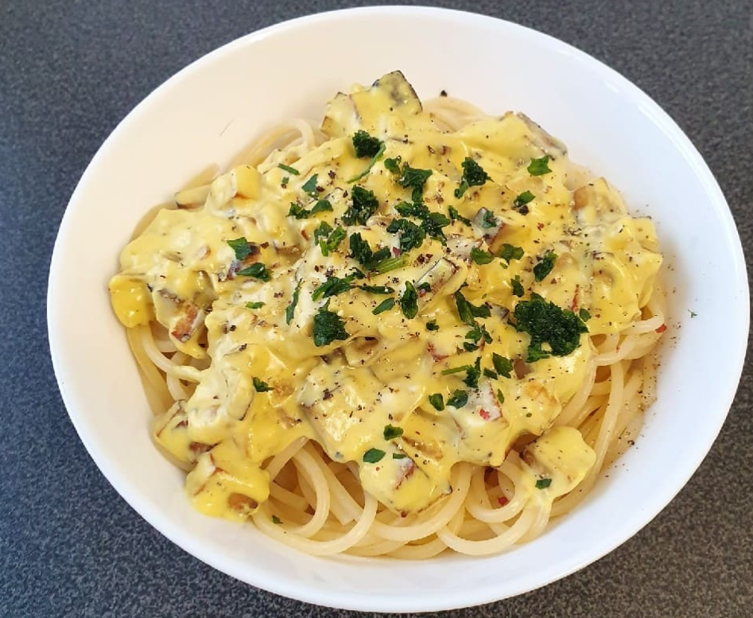

Spaghetti Carbonara

Spaghetti al dente with carbonara sauce
A rich italian spaghetti dish adapted for vegans
Ingredients
- 150g Spaghetti
- 250g smoked tofu
- 2 medium onions
- 250ml soy cream
- 150g grated vegan cheese
- Kala namak salt, pepper
- 20g vegetable oil
Directions
- Fry tofu and onions in some oil over medium heat until the tofu is crispy.
- Bring water to boil and add the spaghetti, cooking according to the instructions on the wrapping.
- Add the vegan cheese and soy cream to the tofu and onions and keep stirring until the sauce gets creamy.
- Season with kala namak and pepper to taste.
- Put the spaghetti on a plate and top with your carbonara sauce.